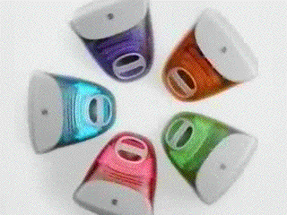
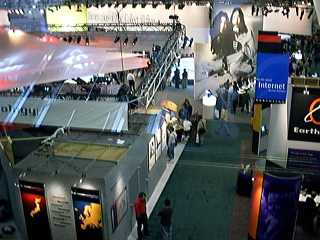
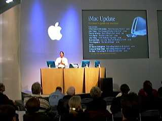
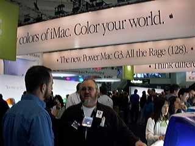

First Quarter, 1999
Table of Contents
- Letter from the Editor
- Macworld Expo SF 1999
- Expo Keynote
- On the Show Floor
- Pictures from the show
Letter from the Editor
This year's Macworld Expo was possibly the best expo in
the last three years. This was the 10th Expo I've attended
in a row, and although I've seen the Mac industry in better
times, I've also seen it in much worse shape during the
lean years of 1996-1998. This year's show was held in the
context of the iMac's success, the million upgrades to
MacOS 8.5, and continued Apple profitability.
The announcements during the keynote only helped to
reinforce that 1999 will be the year that Apple continues
to grow and win both market share and mind share. Let the
Mac market show the way towards a better computing
experience, an experience the Wintel folks can only dream
about.
The world's a little bit better place because Apple's in it. That's why I'm here. Someone has to make good computers. If Apple doesn't do it, I'm afraid nobody else will.
Steve Jobs, Apple iCEO
Alex Morando
Newsletter Editor
Expo Keynote
The keynote was held on the morning of January 5th in
the Expo User Conference rooms on the west side of Moscone
Center. Due to the large crowds, an overflow conference
hall between the South and North halls was used to transmit
closed-circuit TV of the keynote. Unlike previous shows,
only one keynote was delivered. This was done in order to
focus all attention to Steve Jobs' presentation. I managed
to get most of the keynote points by simply hanging near
the back of the hall - the audio/video was pretty good
considering the noise and crowds.
Jobs speech focused on four "surprises" - the new PowerMac
G3s, the premiere of MacOS X Server, the return of Mac
developers to the game market, and the introduction of the
new (Rev. C) iMac. Full details of the keynote are
available at
AppleInsider.
Power Macintosh G3
New and improved
According to Steve Jobs, the four major design goals of the
new machines are:
- Most Powerful - With the 233MHz iMac already
faster than the 450MHz Pentium II, the new processor
speeds of 300/350/400 MHz of the new G3s only increases
Apple's performance edge over Wintel clones. When
properly optimized on both platforms, applications such
as Adobe Photoshop run much, much faster on a G3.
Even when the MacOS version is not optimized,
applications such as Microsoft Office still run
faster MHz for MHz on a G3 compared to Intel machines.
- Best 2D/3D graphics - It isn't simply enough
that Apple match the PC industry in graphics speed and
sophistication. Apple has always, always, had a
lead in graphics, and the announcement that the new G3s
will use the advanced ATI Rage128 chipset only
strengthens the Macs graphics advantages. This chipset
was co-developed by Apple and ATI. Although available on
the PC side, it is optimized for the MacOS and leapfrogs
the current 2D/3D Wintel leaders - the Voodoo3 and
RIVA/TNT chipsets. Demos indicate that graphics speeds
are between 20%-30% faster on a Mac 300MHz G3 than an
450MHz Pentium II from Compaq.
-
Most Expandable - Apple has decided to use
industry standard features where they make sense and
homegrown technology when the rest of the computer
industry does not have a solution. Apple has chosen to
use serial technologies in all their expansion ports in
order to reduce costs and increase reliability The new
G3 uses PC-standard 10/100 BaseT Ethernet for
connectivity to existing networks and the Internet.
Like the iMac, the new G3 has two USB ports for local
peripherals.
However, for really high speed data transfer, Apple is the first company to ship computers equipped with dual FireWire (IEEE 1394) ports. These ports have transfer rates as fast as 400Mb/sec (50 Megabytes/sec) for use with digital video and other high-speed communications. Up to 63 devices can be attached to a FireWire bus, including other computers. This latter feature opens up interesting possibilities - small high-speed networks, two computers looking at hard disk as a local drive, multiprocessing of video and data streams. The possibilities are still being discovered (or at least implemented in hardware).
During the keynote, Jobs took a video camera and ran its output first into one G3, and then into another G3. In a true demonstration of plug-and-play, he disconnected the cables a few times, and the FireWire network didn't even crash (Bill Gates wishes he had as much luck with Windows98 and a scanner).
- Best Design - The new PowerMac G3 comes in a distinctive case - not exactly the Bondi Blue of the first iMacs, but more like the new "blueberry" color of one of the new iMacs. Apple has decided to not change the name; the new machines are still called "Power Macintosh G3", but Apple is referring to them as "Blue-and-White" G3s. I couldn't help but notice that the side profile looks like a Apple command key. Like the iMac, the case is beautiful and makes people want to touch it.
MacOS X Server
Apple announced the February availability of MacOS X
Server. Priced at $995 for a unlimited-client license, it
is an attractive alternative to WindowsNT, offering all the
advantages of a microkernel-based Unix system with the
powerful features of both open-source software such as
Apache and GNU toolset and (proprietary) Apple software
such as the OpenStep development environment (Yellow Box)
and WebObjects, a leading enterprise-level development
environment.
Unfortunately, Apple has decided not to release a "lite
workstation" version of MacOS X Server, partly to keep
focus on the upcoming MacOS X which should be available
later this year. At $995, it is targeted at the server and
high-end markets. This is unfortunate as there is certainly
a consumer market for a robust, modern operating system -
just ask the folks at LinuxPPC doing a great
business selling a similar, but not as refined,
consumer/server operating system for $32.
Games, Games, Games!
Jobs announced that at least 10 of the top-selling PC games
will be available on the Mac. He then presented John
Carmack, founder of Id Software. John, a games guru with a
lot of influence in the PC world, announced full support of
MacOS, promising the simultaneous release of Id Software
titles such as Quake Arena on both PCs and Macs.
Jobs then announced the biggest surprise of the show - the
immediate availability of Connectix's Virtual GameStation
(VGS). By emulating a Sony PlayStation for $49, the Mac
game market just increased by 500 software titles. Although
Connectix only guarantees that the VGS would only work on
an Apple-branded G3, people have found that the biggest
limitation is the motherboard bus speed rather than
processor speed. Some non-Apple clones with a 60MHz system
bus may be able to run VGS. See PowerWatch message boards
for details.
New iMacs
The new Rev. C iMac was
announced. It features a faster 266 MHz G3 processor
and a 6Gb hard drive, while at the same time removing
the undocumented mezzanine slot and infrared IrDA
ports. Who cares! The biggest news is that the
new iMacs comes in five new colors - strawberry, tangerine, lime,
grape,
and blueberry.
Also, the price has dropped $100 to $1199. Available
immediately. Enough said - go out and buy
some!
On the Show Floor
I spent three days roaming the huge South Hall and the
smaller North Hall. Even though the show space was slightly
smaller than last years, the good use of curtains made it
seem that the floor was actually crowded. Instead of large
open spaces, the edges of the show floor were moved
inwards. You knew this because the first aisle was #300
instead of #100.
LinuxPPC -
What was undoubtedly one of the more crowded booths, the
uber-hackers of LinuxPPC were passing out free CDs of
LinuxPPC 4.0, based on the latest RedHat 5.2 release. They
also made two major announcements, the impending release of
LinuxPPC 4.0 in February, and the release of the ApplixWare office suite.
The former will sell for $32, while the latter will cost an
additional $100.
Connectix
VGS - The announcement of the Virtual Game Station
was certainly the Expo's most surprising event. The crack
development team responsible for VirtualPC turned their
efforts to emulate Sony's PlayStation game console.
Castlewood Systems - This company introduced the Orb a year ago. Now, they have actually begun to ship the $199 drives, providing strong competition to Iomega's Jaz and the late SyQuest's SparQ. With 2.1Gb cartridges going for $30, they provide very low-cost storage. However, we will have to see whether the Orb's reliability and performance are as good as the hype claims them to be.
Developer Central - As usual, DC was the place to be to get the latest product news and software upgrades for the year. A few ASACMUG members visited the Fortner and Metrowerks booth and hopefully got both of them talking towards making a low-cost Fortran compiler for the Macintosh again. For many scientists and engineers, a Fortran compiler is still a requirement (admittedly, it is becoming less and less important), and the lack of an affordable one has kept the Mac from being a better scientific/technical solution. Credit goes to Xplain Corporation for putting together another great pavilion.
Apple Booth - To highlight the fact that Apple Computer is the center of the Macintosh ecosystem, this year's Apple Booth took front and center stage in the South Hall, unlike previous Expos where it was either in the North Hall or some other part of Moscone Center. It was laid out in three sections. One corner contained a large presentation two-screen theater, where Apple representatives talked about MacOS 8.5, the Yosemite Power Macs, the new multicolored iMacs, and passed out T-shirts to the enthusiastic crowd. The other corner contained rotating displays of Yosemite machines. All displays were on lighted tables, accentuating the beauty and form of the machines. People wanted to touch the case, look at the easy-opening access door. Other circular displays emphasized various technologies like FireWire, USB, ColorSync, WebObjects, MacOS X Server, and solutions geared towards Apple's core markets. Between the two sections was a large aisle filled with multicolored iMacs - there were enough of them so that you didn't have to wait more than a minute or two to get you chance to play with them.
More ASACMUG pictures can be found here.

The entrance to the Apple Booth
(John and Yoko look on)

The Apple Theater

People trying out multicolored iMacs
More ASACMUG pictures can be found here.
Thanks for reading this far. See you at next year's Macworld Expo! (January, 2000 - if the our civilization survives Y2K)